The Fundementals
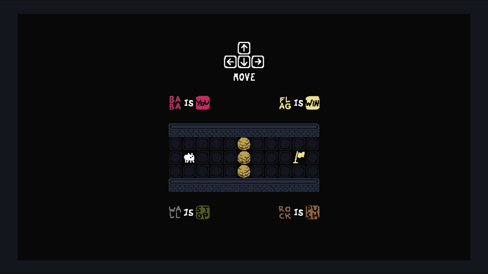
This is the first level in Baba Is You, Level 0. In the game, level rules are presented as words which are called statements. Each statement is typically made up of an object (e.g. [baba]), a connecting word (e.g. [is]), and a property (e.g. [you]). The following rules are presented in this level:
- [baba][is][you]
- [flag][is][win]
- [wall][is][stop]
- [rock][is][push]
Any object that is [you] may be controlled by the player using the arrow keys.
Any object that is [win] becomes the level objective. To win a level an object that is [you] must intersect with an object that is [win].
Any object that is [stop] will stop objects from going through it.
Any object that is [push] may be pushed around.
Here is a look at how the level is played:
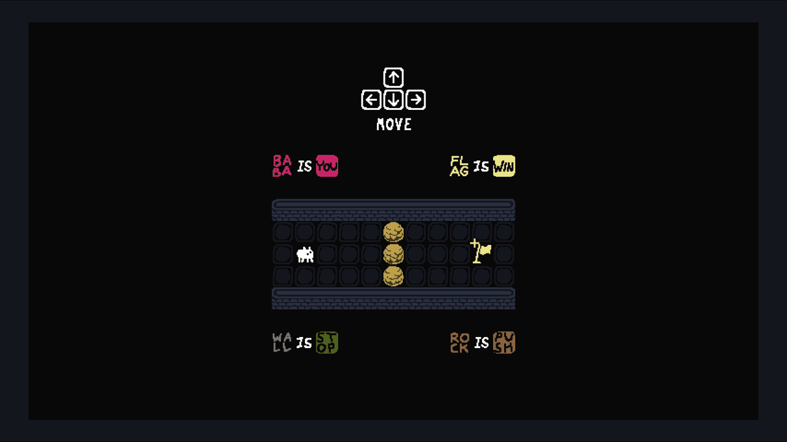
Although this level lacks complexity, problem solving becomes key as we move on.
Level 1 - Where Do I Go?
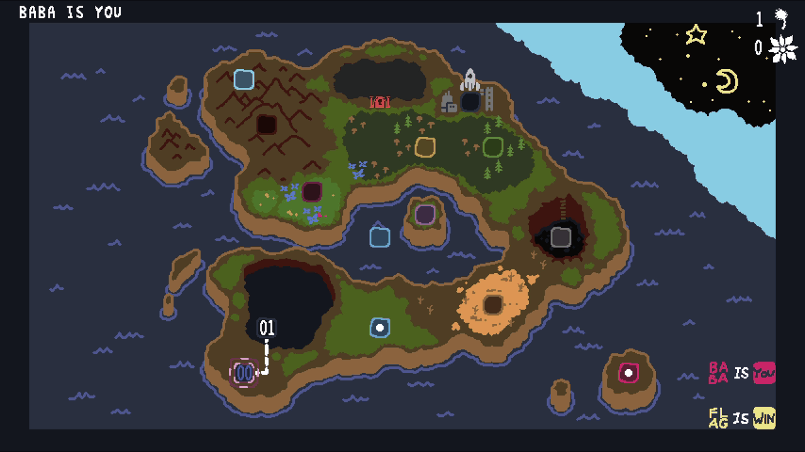
Upon completing Level 0 we are granted access to the world map. We can move the pink cursor to select Level 1.
These are the initial rules for Level 1:
- [baba][is][you]
- [wall][is][stop]
Immediately we notice two problems:
- There are no objects that are [win].
- [baba-o] is surrounded by [wall-o]'s that are [stop].
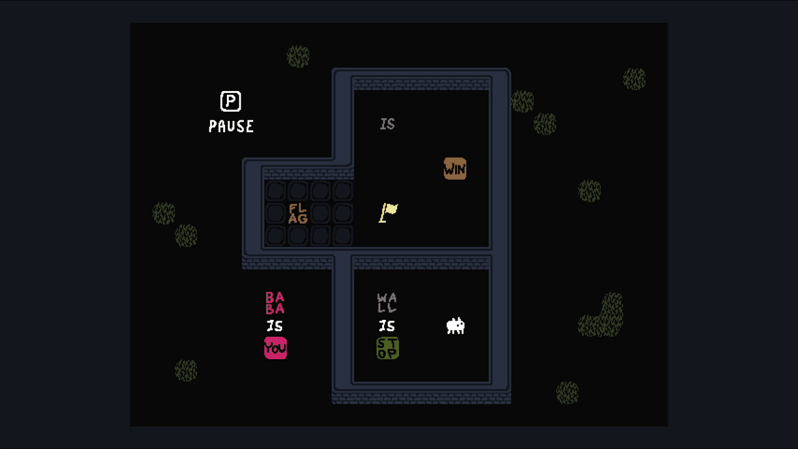
In Baba Is You all [text] can be pushed around.
To solve this level:
- Free [baba-o] by breaking the statement [wall][is][stop].
- Build the statement [flag][is][win].
- Run into the [flag-o].
Upon completing this level the player knows that they can manipulate the rules by pushing [text] around.
Level 2 - Now What Is This?
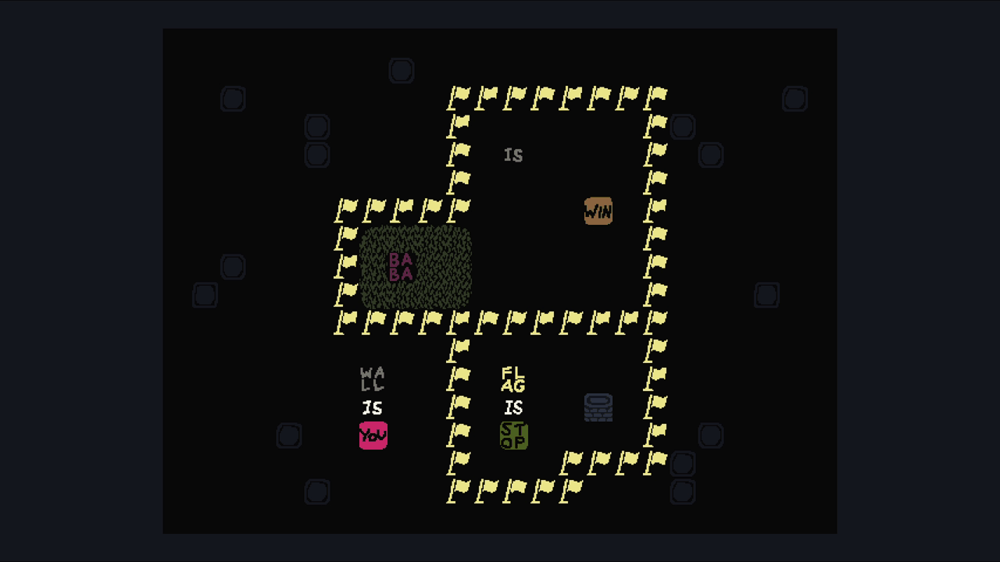
These are the initial rules for Level 2:
- [wall][is][you]
- [flag][is][stop]
Like in Level 1, we have the same problems:
- There are no objects that are [win].
- [wall-o] is surrounded by [flag-o]'s that are [stop].
Functionally, Level 2 is almost identical to Level 1. The importance of Level 2 is that it teaches the player that objects in Baba Is You have no inherent properties. The level does this by scrambling the objects roles in the level. The player is now controlling a [wall-o] instead of the usual [baba-o], and the [wall-o]'s from Level 1 have been replaced with [flag-o]'s.
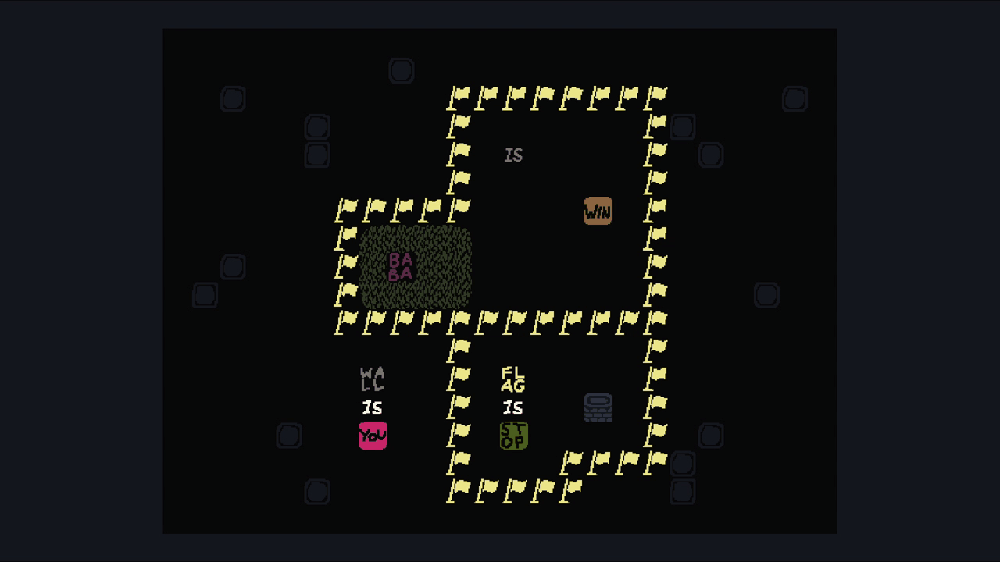
To solve this level:
- Break [flag][is][stop].
- Form [flag][is][win] as there are no [baba-o] present in the level.
- Run into any [flag-o].
Upon completing this level the player knows that object's do not have any inherent properties. Any object can be [you], [win], or any other property.
Level 3 - Out Of Reach
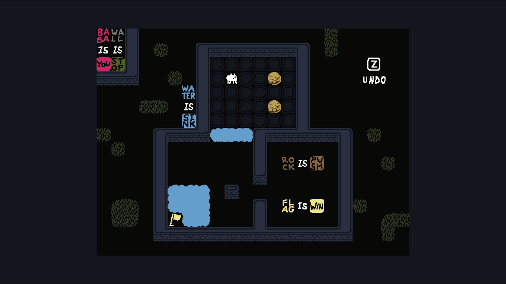
These are the initial rules for Level 3:
- [baba][is][you]
- [flag][is][win]
- [wall][is][stop]
- [rock][is][push]
- [water][is][sink]
[sink] is a new property introduced in this level. Any object that is [sink] will destroy anything it intersects with including itself in the process.
In this level there is a single dilemma:
- To reach the [flag-o] we need to [sink] three objects but only have two [rock-o]'s available to us.
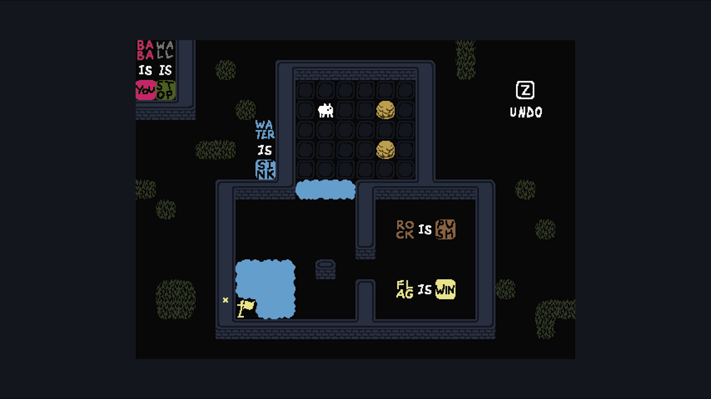
To solve this level:
- [sink] one rock to access the lower room.
- Form [rock][is][win] since navigating to the [flag-o] is impossible.
- Run into the remaining [rock-o].
Upon completing this level the player knows how [sink] works and that they can change the level objective.
Level 4 - Still Out Of Reach
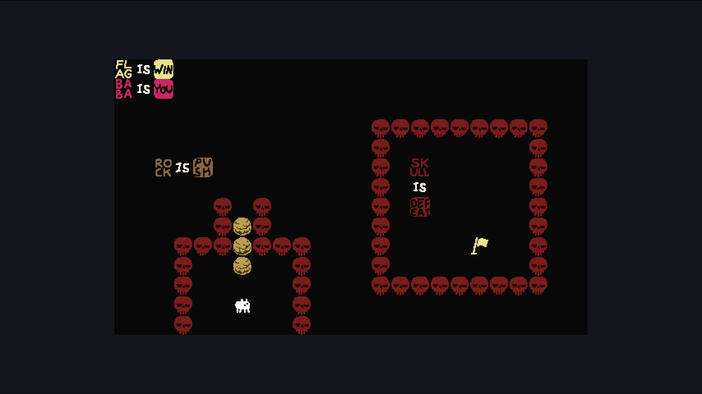
These are the initial rules for Level 4:
- [baba][is][you]
- [flag][is][win]
- [rock][is][push]
- [skull][is][defeat]
[defeat] is a new property introduced in this level. Any object that is [defeat] will destroy any object it intersects with that is [you].
In this level there is a single dilemma:
- To reach the [flag-o] we need to get past the dangerous [skull-o]'s.
To solve this level:
- Form a horizontal line using the three available [rock-o]'s.
- Push the [rock-o]'s to the right to break the statement [skull][is][defeat] without touching a [skull-o].
- Run into the [flag-o].
Upon completing this level the player knows how [defeat] works and that objects are able to push one another.
Level 5 - Volcano
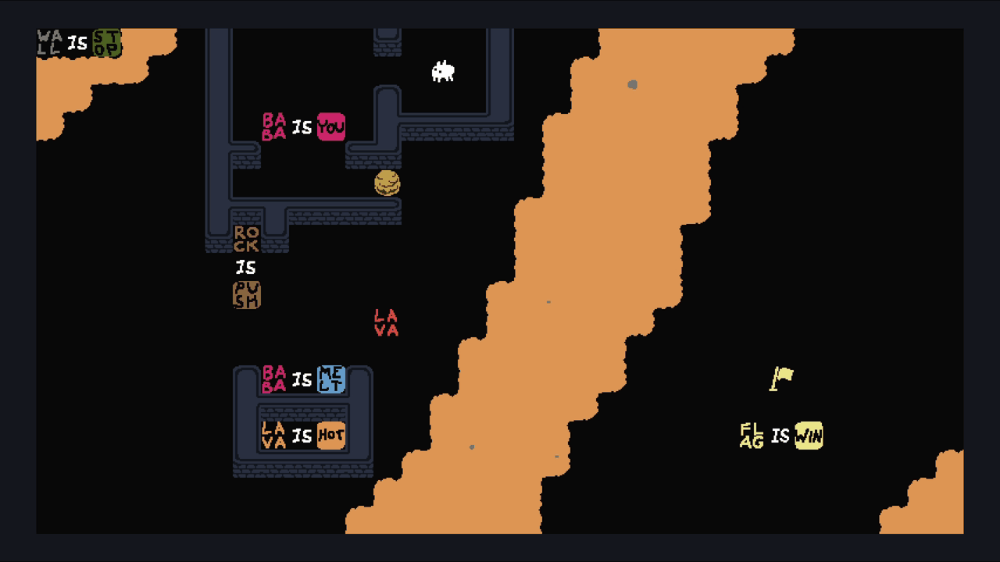
These are the initial rules for Level 5:
- [baba][is][you]
- [flag][is][win]
- [wall][is][stop]
- [rock][is][push]
- [baba][is][melt]
- [lava][is][hot]
[hot] and [melt] are two new properties introduced in this level. Intuitively, any object that is [hot] will destroy any object it intersects with that is [melt].
In this level there is a single dilemma:
- To reach the [flag-o] we need to get past the hot [lava-o].
Shown above is a look at what happens when an object that is [melt] meets an object that is [hot].
This level contains three completely different solutions. If you have already came up with one try to think of what the other two might be. See the three solutions below.
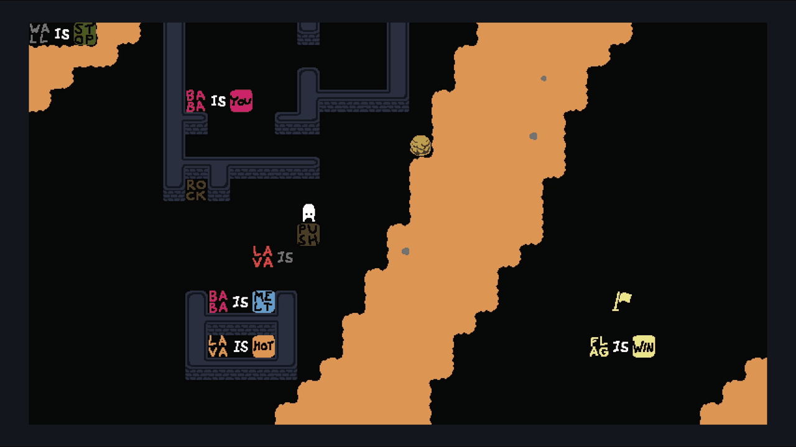
To solve this level using [push]:
- Push the statement [baba][is][you] to the right to leave the northern room.
- Break the statement [rock][is][push]. The [is] and [push] text will be used for the next step.
- Form the statement [lava][is][push].
- Run into the [flag-o].
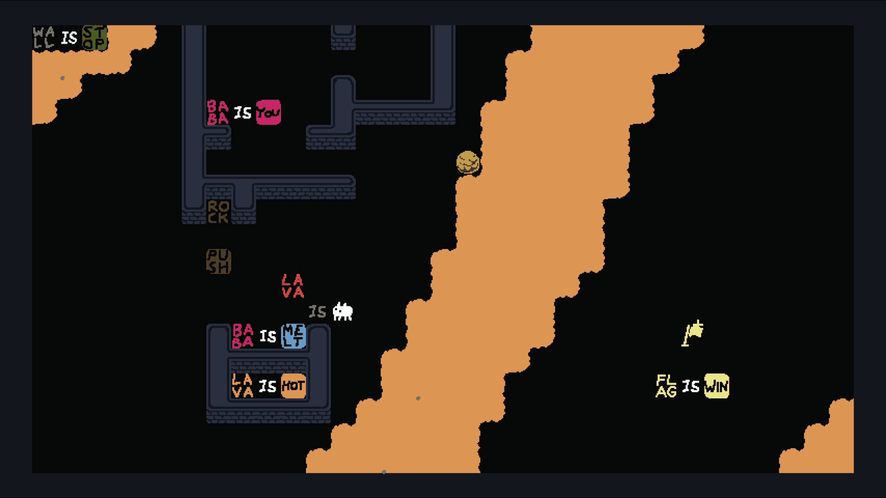
To solve this level using [melt]:
- Push the statement [baba][is][you] to the right to leave the northern room.
- Break the statement [rock][is][push]. The [is] text will be used for the next step.
- Form the statement [lava][is][melt]. Since [lava][is][hot] and [lava][is][melt] at the same time, all the [lava-o] in the level will destroy itself.
- Run into the [flag-o].
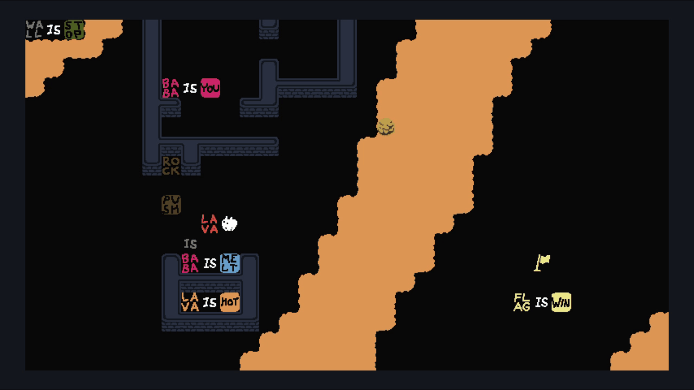
To solve this level using [baba]:
- Push the statement [baba][is][you] to the right to leave the northern room.
- Break the statement [rock][is][push]. The [is] text will be used for the next step.
- Form the statement [lava][is][baba].
- Run into the [flag-o].
This third solution is the trickiest to come up with as it is never explictly told to the player that they can turn objects into other objects. The solution is only found through thoughtful experimentation.
Upon completing this level the player knows how [hot] and [melt] work. In the [melt] and [baba] solution players know that statements can share words. In only the [baba] solution the player now knows that they can turn objects into other objects and that they may control multiple objects that are [you] at once.
Level 6 - Off Limits
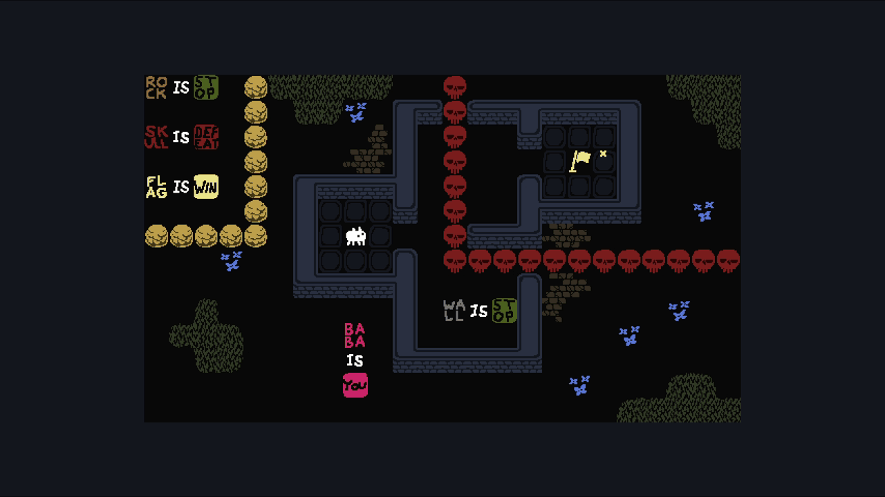
These are the initial rules for Level 6:
- [baba][is][you]
- [flag][is][win]
- [wall][is][stop]
- [rock][is][stop]
- [skull][is][defeat]
In this level there is a single dilemma:
- To reach the [flag-o] we need to get past the dangerous [skull-o]'s.
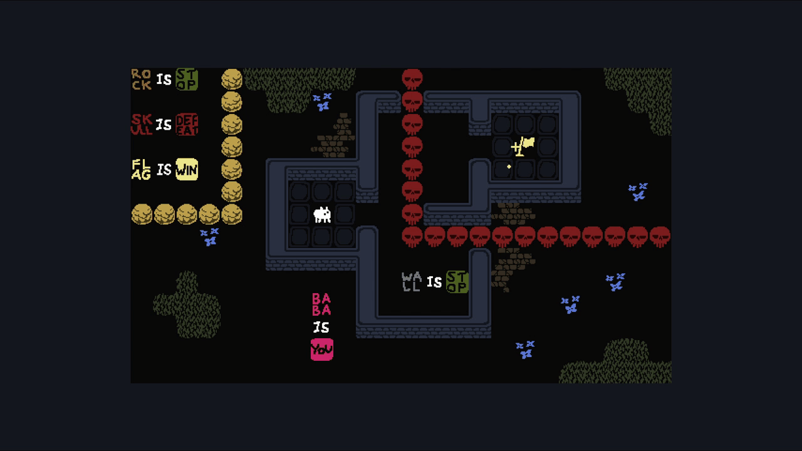
To solve this level:
- Break the statement [wall][is][stop].
- Replace [baba] with [wall] in the statement [baba][is][you] to form [wall][is][you]. Once this is done the player will be in control of all the [wall-o]'s in the level.
- Run into the [flag-o].
Upon completing this level the idea that objects can be assigned any property is reinforced to the player. Additionally, if not already discovered in Level 5, the player knows that they may control multiple objects that are [you] at once.
Level 7 - Grass Yard
These are the initial rules for Level 7:
- [baba][is][you]
- [grass][is][stop]
In this level there is a single dilemma.
- There are no objects that are [win].
Try to come up with a solution.
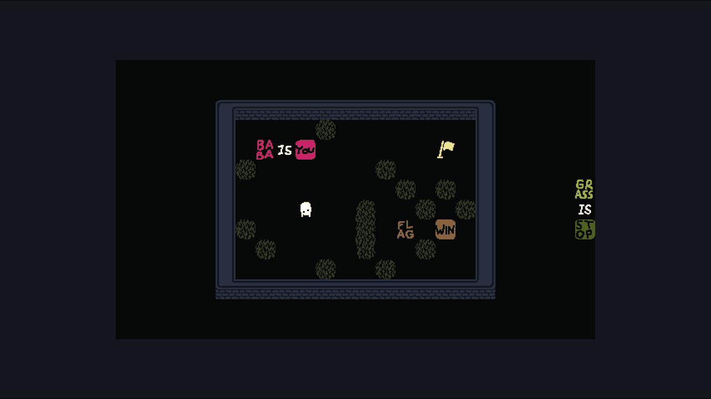
To solve this level:
- Form the statement [flag][is][win] vertically, sharing the IS text with the statement [baba][is][you].
- Run into the [flag-o].
Now that might have seemed very simple but this level teaches the player two important things. First that statements can share text. Second that the player should always read the rules of the level before beginning to solve it. Very often new players will assume that [wall][is][stop] because of how the level looks.
Your Ready!
Congratulations on making it to the end of the introduction. You now know how to play Baba Is You on a fundamental level. If you want to play the game yourself, then this is only the tip of the iceberg. There are still plenty of new properties, objects, and interesting puzzles to solve. On this page, we only covered the tutorial levels. Check out the gameplay page to explore content from the entire game.